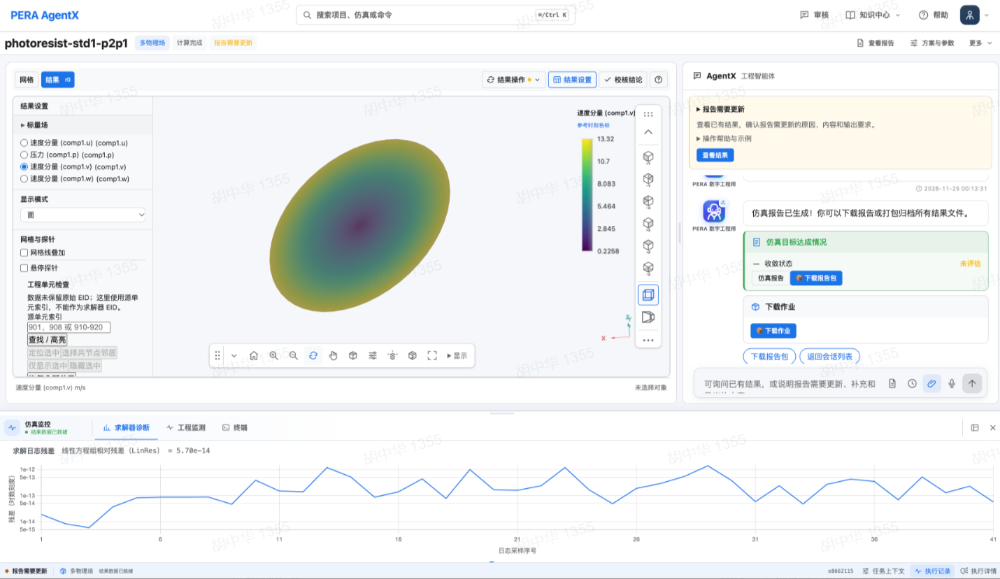

光刻胶旋涂仿真
半导体旋涂工艺需要控制晶圆上的光刻胶膜厚。本案例采用 COMSOL 模拟 8 英寸晶圆上的膜厚变化，并通过参数扫描比较黏度和转速对膜厚的影响。

模型与工况
模型采用二维轴对称瞬态层流和移动网格，设置旋转晶圆壁面、自由液面和外缘出口。基准工况的初始膜厚为 10 µm，动力黏度为 2 mPa·s，转速为 8000 rpm。计算覆盖 0–120 s，每秒输出一次，记录膜厚变化及末时刻的压力和速度分量。
仿真结果
光刻胶层随晶圆旋转逐渐变薄，膜厚变化与 Emslie–Bonner–Peck 理论模型相符。在所扫描的参数范围内，黏度越低或转速越高，胶层越薄。
模型假设
光刻胶按牛顿流体处理，液体与晶圆界面采用无滑移条件。模型忽略溶剂蒸发、非牛顿效应和温度对黏度的影响。